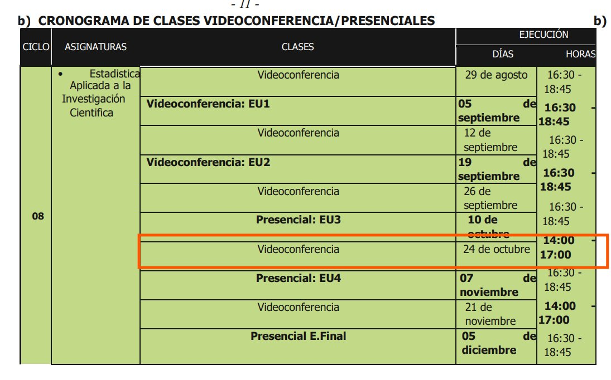
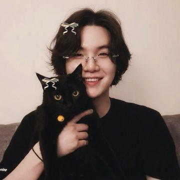
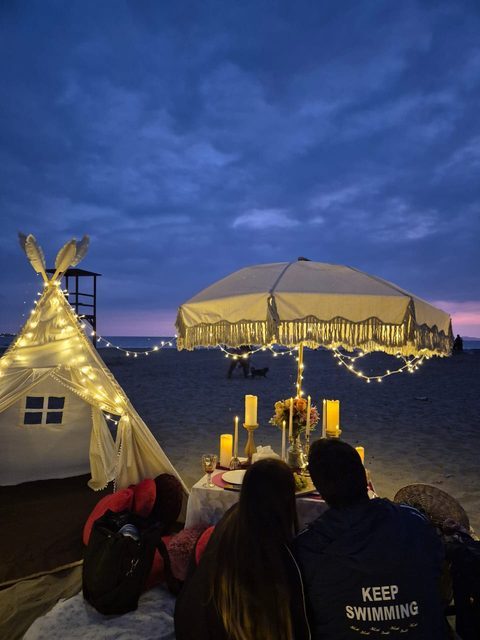

Para Nico, de Gio
Nico, te debo una disculpa de verdad
Te mentí, y lo seguí negando cuando me preguntaste llorando. No tengo excusa. Hice esta página para decirte, canción por canción, lo que siento.
Paso 1 de 4
Diez canciones, de inicio a fin
Cada una dice algo de lo que hice y de lo que siento. Escúchalas completas, con calma, y con el volumen arriba.
Paso 2 de 4
La letra en español, al lado del video
Mientras suena, la letra va traducida al español y se marca el verso que se está cantando. El video también trae subtítulos. Si tocas un verso, la canción salta ahí.
Paso 3 de 4
Los versos con corazón son para ti
En cada canción hay más de diez versos que te dedico. Cuando suena uno, aparece un flashback con lo que te quiero decir, y se guarda solo en tu rincón, abajo a la derecha.
Paso 4 de 4
Al final hay una sorpresa
Mientras escuchas, el cielo se va despejando. Cuando termines la última canción, se abre un regalo que tengo para ti.
Playlist de Gio para Nico
Setlist para Nico
미안해, 니코
mianhae, Niko · lo siento, Nico
Diez canciones para pedirte perdón. Escúchalas de inicio a fin: la letra va en español al lado, y los versos con corazón son los que te dedico.
Las letras llegan de lrclib.net y se traducen al español al momento; los videos son de YouTube.
Toca ▶ en el video
Escúchala completa: al terminar, pasa sola a la siguiente.
¿La letra no va a tiempo?
Letra en español
Traducción automática용서해 줄래?
yongseohae jullae · ¿me perdonas?
¿Me perdonas, Nico?
Sé que te fallé. Sin presión: si todavía no puedes, lo entiendo y me lo voy a ganar.
Tu regalo
Tengo algo para ti
Esta vez no quiero esconderte nada. Tócalo para abrirlo.
Sorpresa
Raspa para descubrirla
BTS World Tour
Arirang
En vivo desde Buenos Aires
- Día
- Domingo 25 oct
- Hora
- 4:45 p.m.
- Cine
- Cinemark Jockey Plaza
- Sala
- 8 · XD
Esta vez, quiero ir contigo.
En octubre fui solo a los conciertos y te escondí uno. Esta vez no te escondo nada: quiero que estés a mi lado. Tú con Yoongi, yo con Jimin, y los dos juntos.
¿Y por qué el domingo?
Porque el sábado 24 dicto clase de 2 a 5 p.m. Te dejo mi horario para que lo veas tú misma.

¿Vienes conmigo, Nico?
보라해
borahae · te quiero en morado
¡Nos vemos el domingo, Nico!


Dom 25 oct4:45 p.m.Cinemark Jockey PlazaSala 8
Escríbeme y coordinamos dónde encontrarnos. Yo llevo las entradas.
Con cariño, Gio